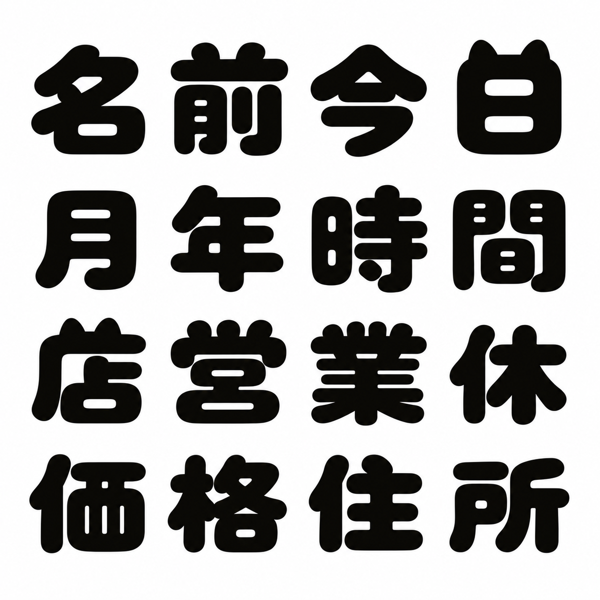

追加生成した漢字 / 最終フォント 0.103 — 1
左は生成画像の該当セルをそのまま表示。右は配布用 WOFF2 の実テキスト。
名 / U+540D
生成見本
実フォント

名
今 / U+4ECA
生成見本
実フォント
今
日 / U+65E5
生成見本
実フォント
日
月 / U+6708
生成見本
実フォント
月
今日のお店でひと休み
にくきゅう丸で、ふんわり暮らそう。
価格：￥1,980（税込） 営業時間 10:00〜18:00